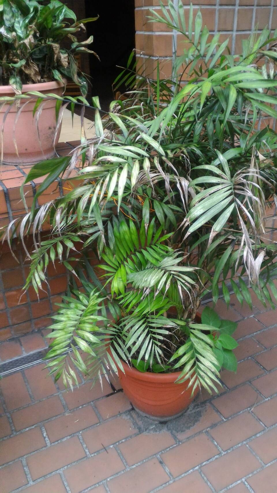

袖珍椰子
學名:Chamaedorea elegans

簡介
既可盆栽，也可用於切花。喜溫暖、潮濕氣候，用肥沃且排水良好的砂壤土種植較宜。
原產於墨西哥及中美洲地區。屬棕櫚科。幼株高約20-30公分，較高品種可達一米。既可盆栽，也可用於切花。喜溫暖、潮濕氣候，用肥沃且排水良好的砂壤土種植較宜。它莖幹直立，不分枝，深綠色，上具不規則花紋。葉一般著生於枝幹頂，羽狀全裂，裂片披針形，互生，深綠色，有光澤。長14~22厘米，寬2~3厘米，頂端兩片羽葉的基部常合生為魚尾狀，嫩葉綠色，老葉墨綠色，表面有光澤，如蠟製品。
延伸閱讀